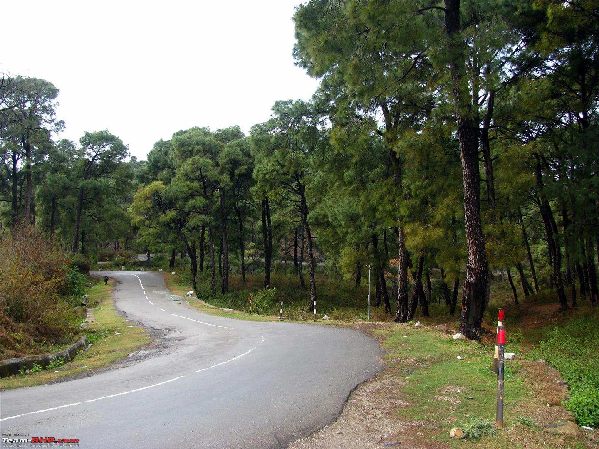

Introduction of NH
Himachal Pradesh state has a good road network. There are 9 national highways with total length of 1,208 km, 19 state highways with total length of 1,625 km and 45 major district roads with total length of 1753.05 km......
If you are traveling via car from NH 88, Kohala, Jawalamukhi and your destination is Dharamshala, Himachal Pradesh 176215, India then it would take approximately 1 hour 26 mins for you to reach your destination.The road distance or driving distance between NH 88 and Dharamshala is 55.178 km. Please note that 1 mile is equivalent to 1600 m or 1.6 km...
The road conditions, diversions, weather conditions, traffic, etc. affect driving distance and travel time. You can also click on the "Show Map" button below to see this route on the map.You can also click on Zoom button on the map to view nearby places and roads. According to the map shown below your travel starts at NH 88, Kohala, Jawalamukhi , depicted on the map below with marker A (green in color), and ends at Dharamshala, Himachal Pradesh 176215, India
 Jawalamukhi to Nh 88 : 0 kms (0.00 miles), 0 hour(s) 0 min(s);
Jawalamukhi to Nh 88 : 0 kms (0.00 miles), 0 hour(s) 0 min(s);
Dharamshala to Nh 88 : 94 kms (59.00 miles), 1 hour(s) 33 min(s);
Himachal Pradesh to Dharamshala : 318 kms (198.00 miles), 4 hour(s) 59 min(s);
Dharamshala to Himachal Pradesh Pavilion : 489 kms (304.00 miles), 8 hour(s) 14 min(s);
Dharamshala to Himachal Pradesh Apartments : 493 kms (306.00 miles), 8 hour(s) 39 min(s);
Himachal Pradesh Pavilion to Dharamshala : 1065 kms (662.00 miles), 14 hour(s) 49 min(s);
Himachal Pradesh Apartments to Dharamshala : 1059 kms (658.00 miles), 14 hour(s) 41 min(s)
;
Jawalamukhi to Dharamshala : 55 kms (34.00 miles), 0 hour(s) 53 min(s);
Dharamshala to Jawalamukhi : 215 kms (134.00 miles), 3 hour(s) 43 min(s)
;
Himachal Pradesh to Palampur-Dharamshala Road : 167 kms (104.00 miles), 2 hour(s) 41 min(s);

BACK